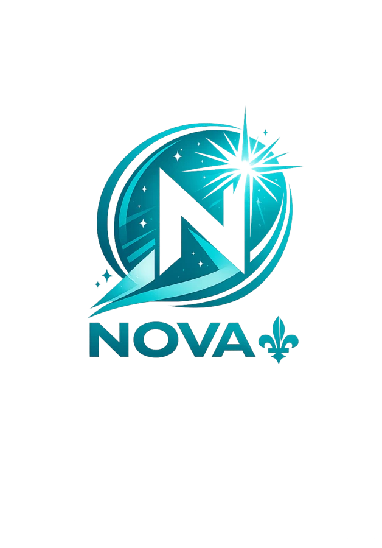

Répondez
Choisissez votre degré d’accord pour la proposition affichée, ou « Sans opinion / passer ».

La Boussole Nova vous présente 64 propositions, une à la fois. Vos réponses sont ensuite cartographiées sur 16 dimensions indépendantes. L’outil décrit vos réponses; il ne vous dit pas pour qui voter.

Un seul axe gauche/droite ne suffit pas à représenter toutes les combinaisons possibles d’opinions. Une personne peut, par exemple, vouloir davantage de services publics tout en privilégiant des libertés civiles fortes, ou soutenir davantage de pouvoirs régionaux sans que cela détermine automatiquement sa position sur d’autres enjeux.
La boussole a donc été créée pour séparer les grandes dimensions politiques, montrer les nuances et permettre à chaque personne d’examiner son propre profil. La future comparaison avec les formations politiques restera une couche distincte et ne sera activée que lorsque les positions publiques auront été suffisamment sourcées et révisées.
Choisissez votre degré d’accord pour la proposition affichée, ou « Sans opinion / passer ».
Une seule question est visible. « Suivant » vous conduit à la proposition suivante; « Précédent » permet de modifier une réponse.
Vous pouvez indiquer si le sujet a une importance faible, normale ou forte pour vous.
Après la 64e question, vous obtenez votre carte à 16 dimensions et les résultats détaillés.
Le résultat peut être envoyé par courriel, copié ou partagé avec les applications disponibles sur votre appareil.
Répondez selon ce que vous pensez réellement. À chaque étape, choisissez une réponse ou « Sans opinion / passer », puis continuez.
Le questionnaire comporte 64 propositions. Vous pouvez revenir à la question précédente à tout moment. Les réponses restent uniquement dans la mémoire de cette page et sont effacées si vous la rechargez ou si vous recommencez.
Chargement du questionnaire…
Le questionnaire se charge localement.
Chaque rayon représente une dimension distincte. Les cartes détaillées sous le graphique indiquent les deux pôles et la couverture réelle de vos réponses.
Cette liste n’est pas un classement. Elle distingue les partis actuellement autorisés, les retraits d’autorisation conservés pour transparence historique et le futur Parti Nova. La comparaison reste désactivée tant que le corpus de positions n’est pas suffisamment documenté.
Chargement du registre des formations…
La formule est volontairement documentée afin d’être vérifiable et reproductible.
Économie; fiscalité; santé; éducation et famille; logement; environnement et énergie; transport; libertés, justice et sécurité; démocratie et éthique; immigration; langue, culture et laïcité; avenir politique du Québec; régions et municipalités; relations avec les Premières Nations et les Inuit; travail; numérique, IA et vie privée.
Chaque dimension contient quatre propositions principales, deux orientées vers chacun de ses deux pôles. Les formulations sont révisées pour éviter les questions doubles et les termes chargés.
La réponse vaut de −3 à +3. L’importance facultative applique un poids de 0,5, 1 ou 1,5. Une question passée n’entre pas dans le calcul de la dimension.
Les réponses pondérées sont divisées par le maximum possible sur les propositions réellement répondues. Certaines propositions transversales peuvent contribuer secondairement à une autre dimension avec un poids déclaré.
Aucune moyenne générale ne prétend résumer toutes vos opinions. La couverture de chaque dimension est affichée séparément.
Une position de parti devra conserver sa source, sa date, son niveau de confiance, sa justification et les contradictions éventuelles. Une position inconnue reste inconnue.